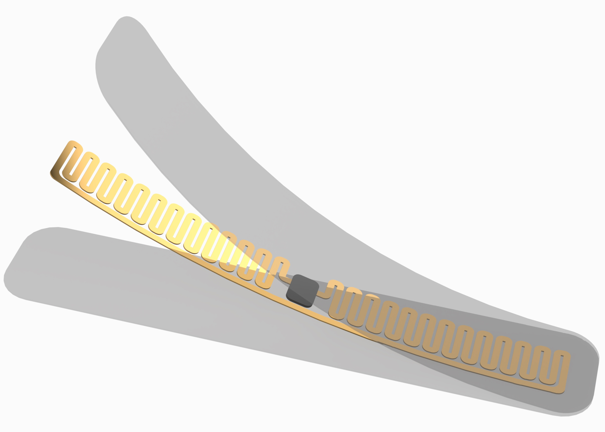
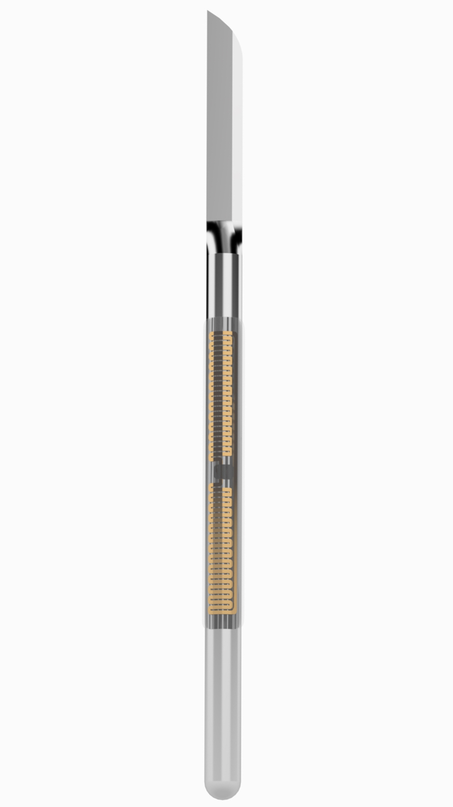

Navigation
Two Minute PitchWhat is RFOID?
Mission Statement
Market Need
Our Product
Market Potential
Competition
Business Model
Marketing Strategy
Team Bios
Joberto Lee
B.S. Mechanical Engineering
Specialization in Design of Mechanical Systems
B.S. Materials Science & Engineering
Specialization in Materials and Mechanical Design
Hana Schlosser
B.S. Biomedical Engineering
Gurbir Jhaj
B.S. Materials Science & Engineering
Warren Zhang
B.S. Materials Science & Engineering
Maggie Yeung
B.S. Biomedical Engineering
Team Advisors
Engineering Mentor: Christine King, PhD
Physician Mentor: Ninh Nguyen, MD
Two Minute Pitch
What is RFOID?
We’ve designed a device for hospitals to use which eliminates the risk of surgical instruments being left inside patients. The issue of retained foreign objects or RFOs won't even cross most people's minds, but tools are left in thousands of patients each year.
Our technology utilizes easy to apply stickers and an overhead device that can scan a patient for tools at the press of a button. One sticker is applied to each surgical instrument via a biocompatible adhesive which is waterproof and safe for any sterilization process. The tags are passive, meaning that they won't need replacement or any battery changes. The overhead scanner detects the stickers using ultra high frequency RFID technology and cuts the time needed to check the patient for tools down from several minutes to just around one second.
Mission Statement
In the United States, there are 28 million operations each year. Unfortunately, with surgeries come complications. Each year, there are 1,500 cases of retained foreign objects (RFOs) nationwide which are left in the body following surgery. RFOs usually result in discomfort to patients, but the complications can go so far as to elicit patient death. Because of this, hospitals find themselves face-to-face with million dollar lawsuits. To combat this, we will be expanding the use of radio-frequency identification (RFID) tags in an attempt to prevent further accounts of RFOs.
Market Need
The current course of action for preventing RFOs is to count the tools that are used per surgery before and after the operation before closing up the patient. However, this process wastes valuable time and humans are prone to error. Our team has set out to create a detection method using identification tags and a scanner in order to reduce the time taken to prevent RFOs while simultaneously making this process more effective.
Our Product
Our solution implements the use of an RFID tag tracking system which can provide nurses and surgeons with the reassurance of knowing that no surgical instruments were left behind in their patients. The tags will be ultra high frequency (UHF) to allow an adequate detection range of at least 3-5 meters, passive so that they are powered by electromagnetic energy transmitted from an RFID reader, small enough to fit onto all surgical instruments, and will be held with a medical grade adhesive capable of withstanding the sterilization procedure and the surgery itself. This will allow nurses to simply activate the ceiling mounted RFID reader which will then detect whether or not tagged instruments are present in range of the patient. Not only is this A.I. technology more accurate and eliminates the possibility of human error, but it also drastically cuts down on the time it usually takes nurses to count instruments by hand.
 
Market Potential
The market we are targeting is vast, seeing as though our product would be a compatible solution to nearly any hospital which performs surgeries. Currently, there are approximately 6,146 hospitals in the U.S., and considering the affordability of our product, all of these hospitals would be able to utilize it if they choose to. By showing hospitals the benefits of such a device and how it can save large amounts of expenses by preventing RFOs from occurring and with the help of our physician mentor, Dr. Ninh Nguyen, we believe our RFOID tracking system will be able to make it into surgery rooms one hospital at a time.
Competition
CensiTrac uses an inventory management system to improve operating room efficiency by linking surgical instruments to their respective trays which can then be linked to specific procedures and patients using barcodes placed on the trays of each set. This system is designed more for preventing surgery start time delays rather than preventing retained foreign objects in real time during surgery.
Xerafy’s Surgical Instrument Tracking system uses rugged RFID tags capable of withstanding decontamination and sterilization processes, along with a handheld scanner to detect if instruments are missing from a set. The scanner is used over the tray of instruments, rather than the patient. Instruments can either be grouped together or listed separately in the interface.

Business Model
We will sell our adhesive UHF RFID tags that can be attached to any metal surgical instrument, such as a scalpel or pair of scissors. In addition, we will sell an overhead scanner that will be a one time purchase. Hospitals have several sets of hundreds of surgical instruments for each operating room and we aim to sell UHF RFID tags that will be used for every instrument in thousands of hospitals worldwide. Additionally, profit can be made from the sale of the overhead detection systems. This will be done through an online retailer. In the Medicare cost report data for 2014, hospitals spent about $10 billion on medical supplies, such as handheld surgical instruments. Since all metal surgical instruments can be tagged, there is an enormous market potential.
In order to reach our customers, we will advertise to spread awareness as well as rely on word of mouth to provide our customers with our products. In our early implementation stage, we will provide free trials of our products to generate more awareness of our company. Hospitals will be able to opt in to purchasing our products when they are purchasing their surgical instruments and tools. We predict that once implemented, the cost of RFID tags on surgical instruments will even out to about $10 per operation, making the cost a worthwhile investment considering the time saved in every operation, time saved in corrective surgeries, and potential lawsuits.
Marketing Strategy
With the existing competition in the market, our products are set to replace the existing products. In order to achieve such a goal, our marketing strategy needs to help our customers with the transition process to our product. There are 2 main steps for our market strategies discussed below.
Free Trial / Use Training: It is important to encourage our potential customers to familiarize themselves with our product, which we will accomplish through free trials and trainings. The trials would help the tags and overhead scanner appear in hospitals across the country and the training ensure that our product is accessible to all potential users. Our products are easy to operate, therefore, training can be finished in three hours. After their free trial and training, our clients will determine if they would like to keep our products. With the simplicity and reliable function of the tags, we believe they would make a very appealing case for themselves during the free trial.
Initial Discounted Price: After clients have the ability to test our products, the next factor buyers will consider is the price. An initially discounted price will help us to expand our product to more markets, which is critical to our start-up company. The lower price is also welcomed from customers. This win-win situation increases the chance of them purchasing the product, and we will start to accumulate a positive reputation and market share from here on out.
The following marketing strategies, which will be used to further advertise our product, are summarized in the table below:

Team Bios
Joberto Lee
Joberto is the team leader, who overviews the progress of the project. He founded his own company when he was in high school, which remains active today. During his time in UC Irvine, his experience as three UCI organizations has given him valuable skills which he has applied to being the leader of this project. He is able to provide the team with technical guidance due to his well rounded background in mechancial engineering, materials science engineering, computer science and graphic design.
Hana Schlosser
Hana is the Business Advisor for the team, who developed our business model and Gantt chart. In her time at UCI, she has gained many skills through interning and research. Hana is extremely passionate about biotech, sustainability, politics, music, and food. She has great time management and is very responsive to feedback, all of which contribute to her skills as the team's Business Advisor.
Gurbir Jhaj
Gurbir is the manufacturer for the team, and is in charge of ordering materials such as RFID tags and adhesives. His eagerness to get into industry compelled him to push himself academically in order to finish a year early. As a Material Science Engineer, his knowledge in manufacturing and quality assurance makes him ideal for the manufacturer position.
Warren Zhang
Warren is the designer, and is in charge of brainstorming the solutions to our problems. As an undergraduate researcher, he enjoyed thinking outside of the box and challenging the status quo. From his undergraduate classes, Warren understood the basic design criterions, helping him to work closely with Gurbir, the manufacturer for the team, to develop an effective and practical solution.
Maggie Yeung
Maggie is the marketing advisor for the team. She conducted marketing interviews with surgeons and hospitals to learn more about the market for our product. Outside of her studies as a Biomedical Engineering student, she enjoys outdoor activities, such as rock climbing and hiking. Her previous experience at Camp Keff @ PJCC helped her develop her strong interpersonal skills, helping her excel as our marketing advisor.